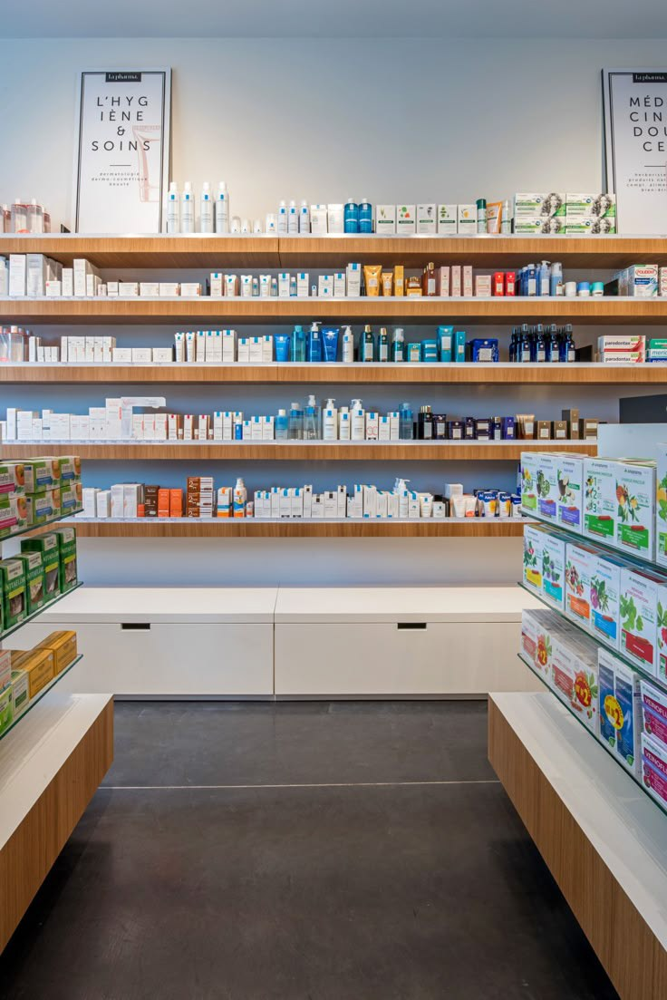
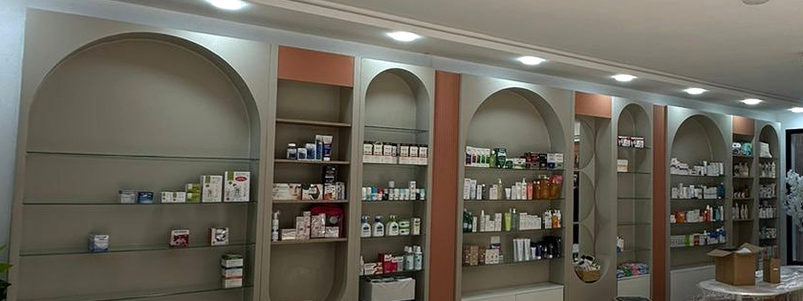
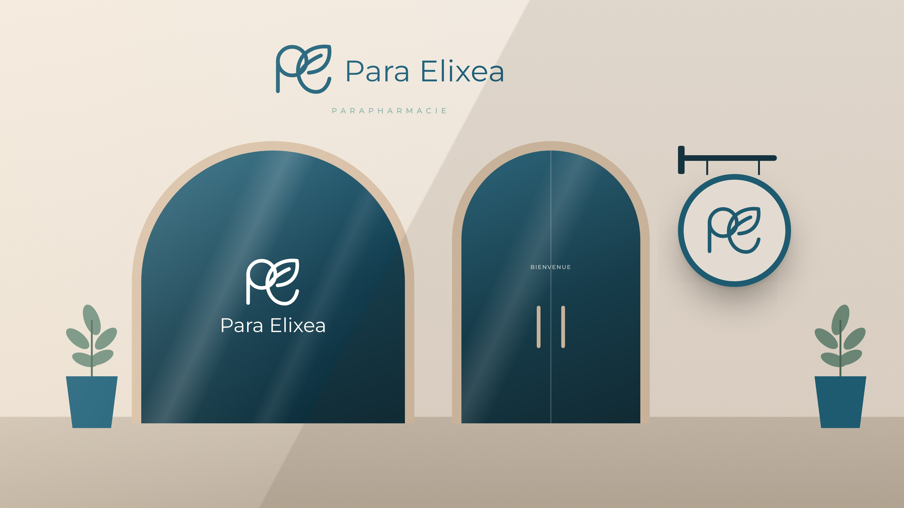

Para Elixea est une parapharmacie premium établie à Slimen, Nabeul, conçue pour redéfinir l'expérience du bien-être en Tunisie.
Notre mission : offrir une alternative raffinée aux parapharmacies traditionnelles — une curation rigoureuse de produits premium, dans un environnement qui allie confiance absolue et sensation luxueuse.

Active, informée, souvent maman. Elle veut des produits efficaces, un avis fiable — et un moment pour elle.
Un refuge où l'on vient prendre soin de soi en confiance. Toute l'identité est pensée comme un lieu : on y entre, on respire, on est guidée.
La boutique de Slimen est rythmée par des niches en arche. Nous avons simplifié cette architecture en une forme graphique unique : un rectangle coiffé d'un demi-cercle parfait.
L'arche devient un cadre : elle « met en vitrine » un produit, un visage, une information — comme une niche met en valeur ce qu'elle contient.
Le monogramme est dessiné d'un trait monoline aux terminaisons arrondies. Cette règle s'étend à tout le système : icônes, pictogrammes, filets et illustrations.
Le marché local se partage entre l'efficacité froide et l'abondance promotionnelle. Personne n'occupe le territoire de la sérénité experte : c'est la place de Para Elixea.
Lumière naturelle, matières douces, végétal discret, architecture courbe. L'autorité du Vert Marine, la douceur de la Crème.
Le logo associe un symbole — le monogramme PE — et un mot-symbole en Gotham. Il est la signature officielle de la marque et doit être privilégié dans toutes les applications.
Le symbole fusionne les initiales de Para Elixea. La boucle du P s'entrelace avec une feuille dont le contour dessine le e : la science (la lettre, la structure) rencontre la nature (le végétal, la croissance).
La boucle du P est un cercle parfait. La feuille s'appuie sur ce cercle et sur l'axe du fût. Le mot-symbole est aligné sur le centre optique du symbole ; sa hauteur de capitale équivaut à 0,42 fois la hauteur du symbole.
Aucun élément (texte, image, bord de document) ne doit pénétrer la zone de protection. Son unité x correspond à la largeur de la boucle du P divisée par deux.
Géométrique, structurée, intemporelle. Gotham porte la voix de la marque : le mot-symbole, les titres et les éléments d'impact. En capitales avec une approche large, elle exprime l'autorité ; en bas-de-casse Light, l'élégance.
Humaniste et très lisible, Calibri est dédiée aux textes courants, descriptions de produits, légendes et informations techniques. Elle apporte une touche d'accueil qui complète la rigueur de Gotham.
Le motif est tiré directement du symbole : la feuille-e, isolée et répétée en quinconce. Il s'utilise en fond discret — papier de soie, intérieur de packaging, cartes, réseaux sociaux.
Trois proportions suffisent. L'arche se pose toujours sur une ligne de base (bord du support, filet, sol) : elle ne flotte jamais et n'est jamais retournée.
Une grille de 48 × 48, un trait de 2,4 unités aux extrémités arrondies — le même ADN que le symbole. Les icônes sont toujours monochromes, posées seules ou dans un cercle de teinte claire.
